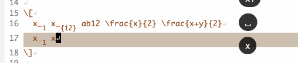

For LaTeX:
Greek letters: using cdlatex
cdlatex
Intelligent fraction and subscripts: using aas and laas.

aas
Modifiers
- automatically select the word under the cursor (or adjacent to it)
if no region is activated
- wrap the region with macros specified according to text or math
environment
- E.g.,

# -*- mode: snippet -*-
# name: LaTeX bold
# type: command
# binding: s-b
# --
(my-selected-text)
(yas-expand-snippet
(if (region-active-p)
(if (texmathp)
"\\mathbf{`yas-selected-text`}$0"
"\\textbf{`yas-selected-text`}$0"
)
(if (texmathp)
"\\mathbf{$0}"
"\\textbf{$0}"
)
)
)
Other snippets: E.g., 
Configurations:
(defun my-selected-text ()
"mark word at point"
(when (not (region-active-p))
(let* ((start (point)) (end (point))
(syntaxes "w_") ;; "w" for real word
)
(skip-syntax-backward syntaxes)
(setq start (point))
(skip-syntax-forward syntaxes)
(setq end (point))
(unless (= start end)
(goto-char start)
(set-mark-command ())
(goto-char end)
)))
nil
)
(use-package yasnippet
:ensure t
:init
(yas-global-mode 1)
:hook
(yasnippet-mode . #'my-selected-text)
:custom
(yas-snippet-dirs '("~/.emacs.d/yasnippets"))
(yas-prompt-functions '(yas-dropdown-prompt))
(yas-wrap-around-region nil)
(yas-triggers-in-field t)
)
(use-package reftex
:ensure t
:config
(setq reftex-plug-into-AUCTeX t)
)
(use-package cdlatex
:ensure t
:config
(setq cdlatex-takeover-parenthesis nil)
(setq cdlatex-takeover-dollar nil)
(setq cdlatex-paired-parens nil)
:custom-face
(font-latex-sectioning-5-face ((t (:inherit nil :foreground "dark green"))))
:custom
(cdlatex-use-dollar-to-ensure-math nil)
(cdlatex-math-modify-prefix "C-`")
(cdlatex-math-symbol-prefix ?`)
(cdlatex-math-modify-alist '
(;; Character Math Text t nil nil
(?c "\\textcolor{red}" "\\textcolor{SeaGreen}" t nil nil)
(?C "\\mathcal" "\\textsc" t nil nil)
(?h "\\colorbox{SeaGreen}" "\\colorbox{SeaGreen}" t nil nil)
(?H "\\colorboxd{SeaGreen}" "\\colorboxd{SeaGreen}" t nil nil)
(?t "\\text" nil t nil nil)
(?u "\\unit" "\\underline" t nil nil)
(?z "\\zh" "\\zh" t nil nil)
(?- "\\bar" "\\sout" t nil nil)
(?\] "\\underbracket" nil t nil nil)
)
)
:bind (:map cdlatex-mode-map
("<" . nil)
)
)
;; LaTeX-mode in latex.el
(use-package latex
:mode ("\\.tex\\'" . LaTeX-mode)
:hook ((LaTeX-mode . turn-on-cdlatex) ; with AUCTeX LaTeX mode
(LaTeX-mode . turn-on-reftex)
(LaTeX-mode . prettify-symbols-mode)
(LaTeX-mode . outline-minor-mode)
(LaTeX-mode . turn-on-auto-fill)
)
:bind (:map LaTeX-mode-map
("<backtab>" . LaTeX-indent-line)
("C-c C-a" . (lambda () (interactive) (let (TeX-save-query) (TeX-save-document (TeX-master-file))) (TeX-command-run-all nil)))
)
:config
;; make AUCTeX aware of style files and multifile documents
(setq TeX-auto-save t)
(setq TeX-parse-self t)
(setq-default TeX-master nil)
;; add-to-list only AFTER package loaded
(mapc (lambda (pair) (push pair tex--prettify-symbols-alist))
'(("\\item" . ?•)
("\\section" . ?§)
("\\subsection" . ?§)
("\\subsubsection" . ?§)
("\\begin" . ?⦃)
("\\end" . ?⦄)
("\\implies" . ?⇒)
("\\iff" . ?⇔)
("\\nrightarrow" . ?↛)
("\\nRightarrow" . ?⇏)
("\\dots" . ?…)
("\\cdots" . ?⋯)
("\\ddots" . ?⋱)
("\\vdots" . ?⋮)
("\\bot" . ?⟂)
("\\overline" . ?‾)
("\\pm" . ?±)
("\\mp" . ?∓)
("\\star" . ?★)
)
)
(add-to-list 'LaTeX-verbatim-environments "lstlisting")
(add-to-list 'LaTeX-verbatim-environments "lstinputlisting")
(add-to-list 'LaTeX-verbatim-environments "lstinline")
;; escape indentation for verbatim
(add-to-list 'LaTeX-indent-environment-list '("lstlisting" current-indentation))
(add-to-list 'LaTeX-indent-environment-list '("lstinputlisting" current-indentation))
(add-to-list 'LaTeX-indent-environment-list '("algorithm" current-indentation))
(add-to-list 'LaTeX-indent-environment-list '("algorithmic" current-indentation))
(setq preview-scale-function
(lambda () (* 0.75 (funcall (preview-scale-from-face)))))
:custom
(LaTeX-fill-excluded-macros '("hypersetup" "title" "author" "date"))
(TeX-newline-function 'reindent-then-newline-and-indent)
)
;; aas and laas
(use-package laas
:ensure t
:hook ((LaTeX-mode . laas-mode)
(org-mode . laas-mode)
)
:init
(setq laas-accent-snippets nil)
(setq laas-basic-snippets nil)
;;(setq laas-subscript-snippets nil)
:custom
(laas-enable-auto-space nil)
:config
(aas-set-snippets 'laas-mode
"ii" nil
"ip1" nil
"jj" nil
"jp1" nil
"kk" nil
"kp1" nil
"nn" nil
"np1" nil
)
(aas-set-snippets 'laas-mode
;; operators
:cond #'texmathp
"n->" "\\nrightarrow "
"n=>" "\\nRightarrow "
;; symbols
:cond #'texmathp
;; Calculus
"eva" (lambda () (interactive) (yas-expand-snippet "\\bigg\\rvert_{${1:a}}^{${2:b}}"))
;; functions & symbols
:cond #'texmathp
"inv" "^{-1}"
"lisu" (lambda () (interactive) (yas-expand-snippet "\\limsup\\limits_{${1:n} \\to ${2:\\infty}} $0"))
"liin" (lambda () (interactive) (yas-expand-snippet "\\liminf\\limits_{${1:n} \\to ${2:\\infty}} $0"))
"oint" (lambda () (interactive) (yas-expand-snippet "\\oint_{${1:C}} $0"))
"curl" "\\nabla\\times "
"dive" "\\nabla\\cdot "
"var" "\\sigma^2"
;; wrappers
:cond #'texmathp
"abs" (lambda () (interactive) (yas-expand-snippet "\\left\\lvert $0 \\right\\rvert"))
"vv" (lambda () (interactive) (yas-expand-snippet "\\vv{$0}"))
"hh" (lambda () (interactive) (yas-expand-snippet "\\hat{$0}"))
:cond #'laas-object-on-left-condition
)
)